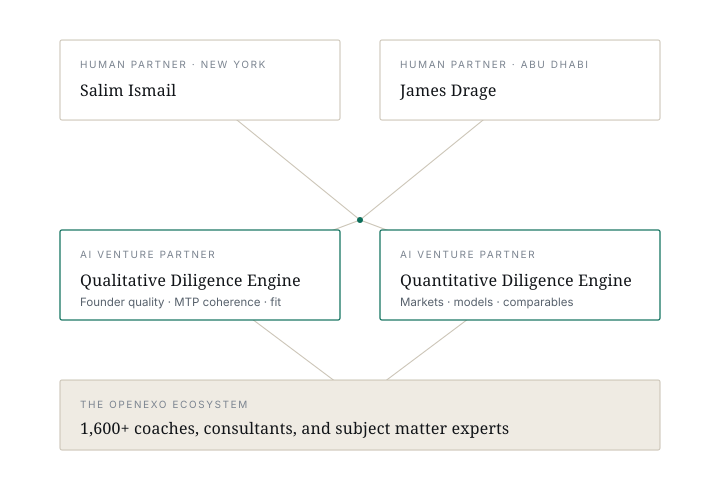
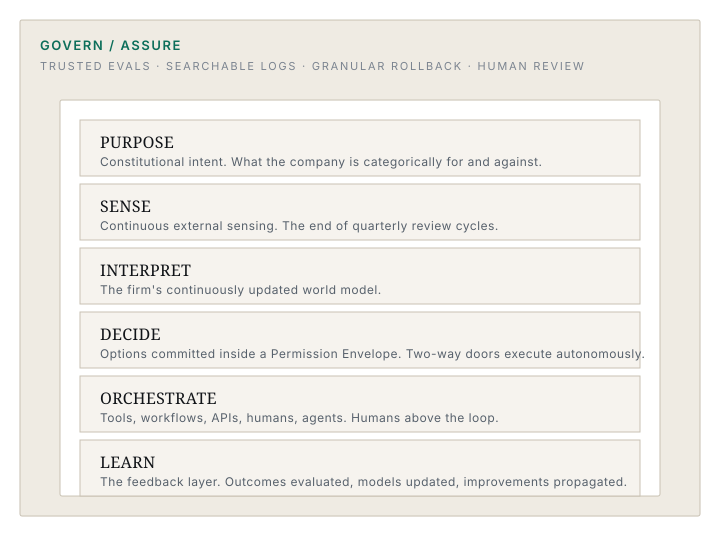

A venture firm built around an operating system.
Most funds back companies. We back companies and bring the architecture they need to compound.
Systematized Venture Capital™.
Most venture firms run on relationship-driven intuition. That has worked for decades, and it will continue to work — but it does not scale to the speed and volume of opportunity created by the Organizational Singularity. We have built Organizational Singularity Fund I as a repeatable operating model: two human partners, two AI venture partners, and a continuously updated knowledge base of ExO methodology, venture best practice, and pattern recognition from thousands of deals. The AI partners are not assistants. They are platform-level diligence and support systems that work alongside the humans on every decision.
The principles behind Systematized Venture Capital™ come from James’ 35 years in coaching, training and development (including being certified in 14 coaching systems) and 20+ overlapping years of experience running venture capital funds where he observed the companies with the highest valuation increases followed systems. To understand the observation better he went back to university for a late-life master’s degree at INSEAD and a doctorate at The Tavistock. At both, his research focused on applying Systems Psychodynamics to Venture Capital. The result is Systematized Venture Capital™ and the chosen system — after evaluating dozens — is Exponential Organizations.

The Intelligence Stack.
The Intelligence Stack replaces the org chart as the company's real operating system. Six continuous cognitive layers, wrapped by a live control plane.

- PURPOSE.
- Constitutional intent. What the company is categorically for and against. Encoded so agents can act on it.
- SENSE.
- Continuous external sensing. Markets, customers, competitors, regulation, signal. The end of quarterly review cycles.
- INTERPRET.
- The firm's continuously updated world model. What used to live in middle managers' heads.
- DECIDE.
- Options generated and committed inside a Permission Envelope. Two-way doors execute autonomously; one-way doors route to humans.
- ORCHESTRATE.
- Where the Stack meets reality. Tools, workflows, APIs, humans, agents. Humans above the loop, not in it.
- LEARN.
- The feedback layer. Outcomes evaluated, models updated, improvements propagated at machine speed. The durable Value Moat.
Below: GOVERN / ASSURE. Cross-cutting. Never off. Detailed in the Four Pillars section below.
ExO 3.0 — MTP + DRIVE + SHAPE.
ExO 3.0 has three parts: a Massive Transformative Purpose (the protocol), the DRIVE intelligence engine (Decision Architecture, Recursive Learning, Intelligence Stack, Value Moat, Elastic Agency), and the SHAPE organizational form (Safe Autonomy, Human Architecture, Adaptive Architecture, Purpose Control, Ecosystem Trust). Ten scoreable characteristics. The Intelligence Stack sits at the core; the other nine are the conditions that let it compound.
The three loops that produce compounding exponential returns.
The ten characteristics are not a checklist. They compound through three reinforcing loops.
-
01The Intelligence Loop.
Better decisions feed the Stack. The Stack produces richer data. Data feeds learning. Learning widens the moat.
-
02The Trust Loop.
Trust attracts contributors. Contributors generate intelligence. Intelligence strengthens the moat.
-
03The Governance Loop.
Safer autonomy enables more delegation. Delegation surfaces edge cases. Edge cases feed learning.
The Intelligence Loop creates the advantage. The Trust Loop scales it. The Governance Loop keeps it from collapsing under its own velocity.
GOVERN/ASSURE is four operational pillars running in production.
-
01Trusted Evals.
Every agent runs continuously against a known test set. Drift below threshold triggers retraining or rollback automatically. No eval suite, no production agent.
-
02Searchable Logs with Correlation IDs.
SENSE → INTERPRET → DECIDE → ORCHESTRATE → outcome, chained on a single correlation ID. Immutable, hashed, signed. Any outcome reconstructable from the audit trail alone.
-
03Granular Rollback.
Any single agent revertible to last week's prompt, last month's model, or last quarter's policy — without taking the rest of the Stack down.
-
04Human Review Queue.
Anything that touches money, legal text, or a customer of record routes to a named human. Not "humans in the loop on every decision." Humans above the loop where accountability requires a name.
How we source, diligence, and support.
-
01Sourcing.
Proprietary flow from the OpenExO ecosystem, Salim and James’ extensive, global networks, podcast and keynote-driven inbound, and the AI venture partners continuously scanning the global startup graph against the thesis.
-
02Diligence.
Two human partners and two AI venture partners. One AI is built for qualitative diligence — narrative, founder quality, MTP coherence, architectural fit. The other is built for quantitative diligence — markets, financials, comparables, pattern recognition. The humans hold final accountability. The AIs raise the floor. All supported by the concept of Who, Not How to bring in subject matter and domain experts.
-
03Support.
We developed Systematized Venture Capital™ based on using a proven system to grow portfolio companies and their valuations. Not simply “one size fits best practices” but more personalized support based on the foundation of a proven system that has helped individuals through Fortune 50 companies innovate, execute, and grow revenue, profits, and valuation.
It usually starts with the Backcasting Canvas in the first 30 days. Minimal Viable Intelligence Stack in the first 60. GOVERN / ASSURE pillars scored quarterly. Founders get standing time with Salim, the senior OpenExO operators, and the partner team.
Building an Intelligence-Stack-native company?
We back founders solving civilization-scale problems. Tell us what you are building.
Talk to the fund →Looking at the next generation of venture platforms?
Organizational Singularity Fund I opens to outside LPs in 2026. Start a conversation.
Start an LP conversation →